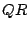

Solving bordered systems of linear equations where the matrix is augmented by a small number of additional rows and columns is ubiquitous in continuation and bifurcation analysis. Examples include pseudo-arclength continuation, constraint following, and turning point location. However solving these systems in a large-scale setting where the original matrix is large and sparse is difficult. Directly augmenting the matrix destroys the sparsity structure of the original matrix since the additional rows and columns are usually dense, while block elimination methods have difficulty when the original matrix is nearly singular and result in additional linear solves.
In this talk we discuss a simple method for solving systems of this form using Krylov iterative linear solvers based on computing the  factorization of the augmented rows, and is an extension of the Householder pseudo-arclength continuation method developed by H. Walker. It allows solutions of the bordered system to be computed with a cost roughly equivalent to solving the original matrix and is well-conditioned even when the original matrix is singular.
We then apply this technique to the problem of computing turning point bifurcations in large-scale nonlinear systems. The approach allows turning point algorithms that are faster, more robust and scale better to millions of unknowns compared to traditional block elimination schemes. Examples of applying these techniques to large-scale structural and fluid mechanics problems will be presented. These techniques have been implemented in a continuation and bifurcation software package called LOCA, short for The Library of Continuation Algorithms, developed by the authors and publicly available as a part of Trilinos, a set of scalable linear and nonlinear solvers.